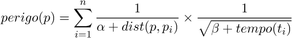
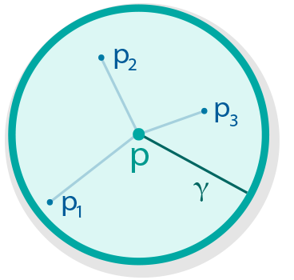

O Rota Segura calcula um índice de perigo para qualquer lugar na Cidade Universitária. O índice é baseado em ocorrências de violência documentadas tanto por usuários do Rota Segura quanto por fontes de notícia (como o Jornal do Campus e a Folha de S. Paulo). O índice leva em conta onde e há quanto tempo os indicentes ocorreram. Um lugar terá um índice alto se ocorreram vários indicentes recentes próximos ao local.
Matematicamente, o índice de perigo de um ponto p é dado pela seguinte fórmula:
onde {p1, ..., pn} são os locais das ocorrências próximas a p (dentro de um raio γ).
Quando um usuário do Rota Segura anda por um local perigoso, recebe um alerta do aplicativo.
O Rota Segura é software livre e seu código está disponível no GitHub: